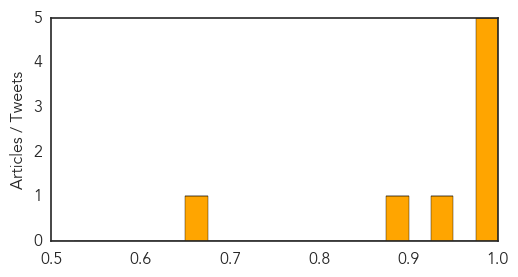

MERS
30-Day Web Trend
0 alerts, 0 warnings
30-Day Twitter Trend
1 alerts, 0 warnings

Article Locations
Article Confidences

Top Articles:
- 0.999
- Two Cases Of MERS CoV Infection Reported In Iran
- 0.999
- Kuwait- Compound fights virus behind MERS
- 0.994
- Medical centres doing expat visa health testing in Saudi Arabia suspended
- 0.990
- WHO confirms MERS in Iran as Kuwait finds virus in camels
- 0.685
- More MERS, more problems
- 0.564
- Health facilities that fail to meet standards will lose licenses
Top Tweets:
- 0.704
- RT: Unanswered questions about the Middle East respiratory syndrome coronavirus (MERS-CoV) http://t.co/4KPV3lVUD2 bmcresearchnot…
Chikungunya
30-Day Web Trend
6 alerts, 6 warnings

30-Day Twitter Trend
1 alerts, 0 warnings

Article Locations
Article Confidences
Top Articles:
- 0.996
- U.S. Virgin Islands reports 1st locally transmitted case of chikungunya virus
- 0.991
- Health officials: Painful mosquito-borne illness showing up in Tennessee
- 0.990
- DHHS sees 1st case of rare, mosquito-borne virus
- 0.986
- Tennessee Health Officials Investigate Report of New Virus
- 0.978
- New mosquito-borne virus? Tenn. health officials investigate
- 0.948
- Authorities move to prevent Chikungunya in Region Five
- 0.881
- Chikungunya virus causes 40% absenteeism; including hospitals
- 0.654
- NBC-2.com WBBH News for Fort Myers, Cape Coral & Naples, Florida
Top Tweets:
-
No tweets found for Jun 11, 2014